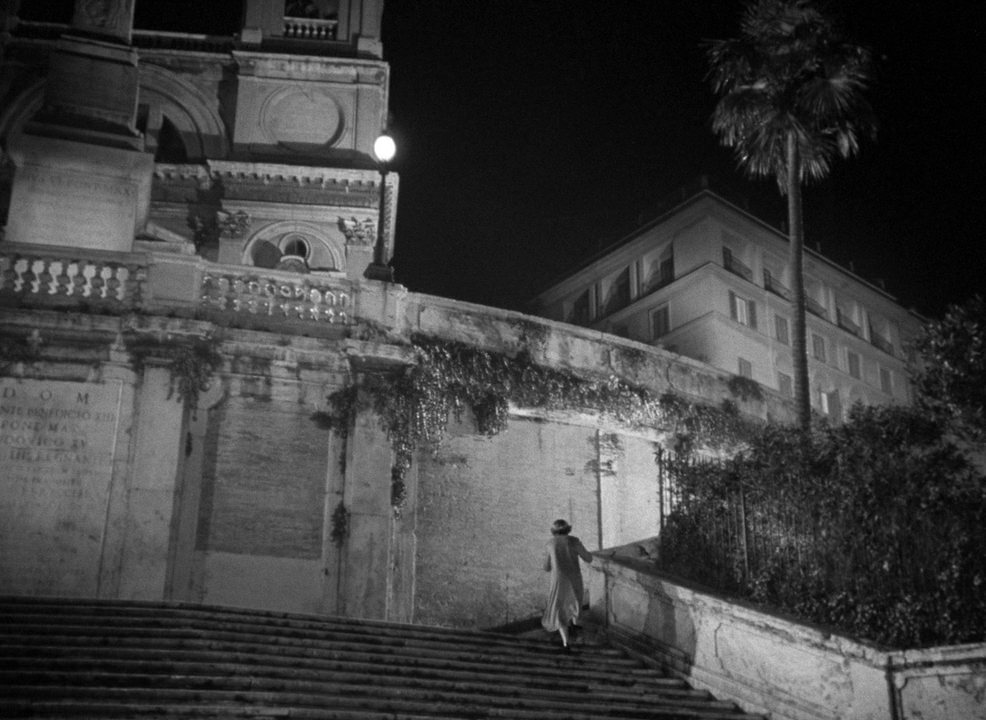
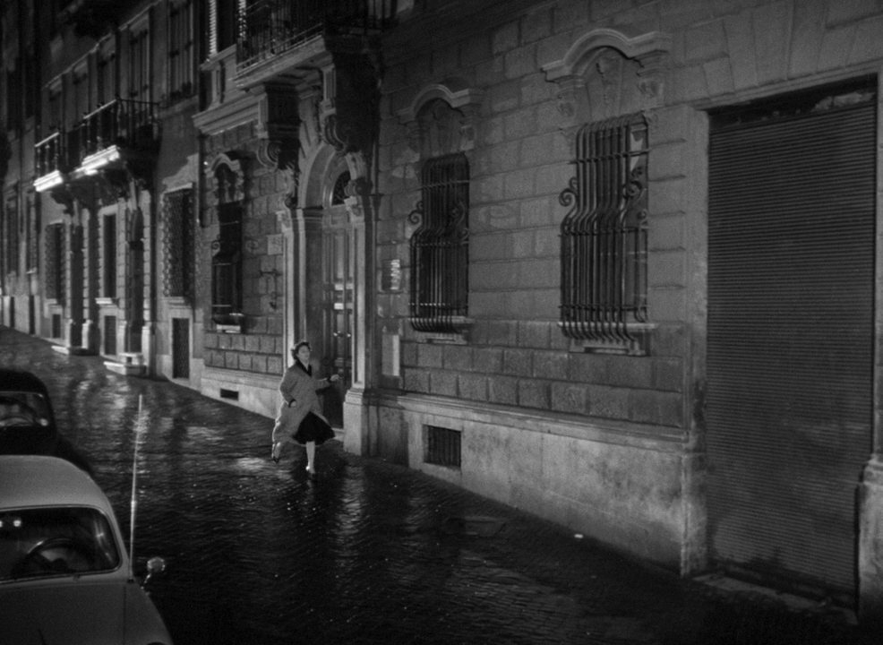
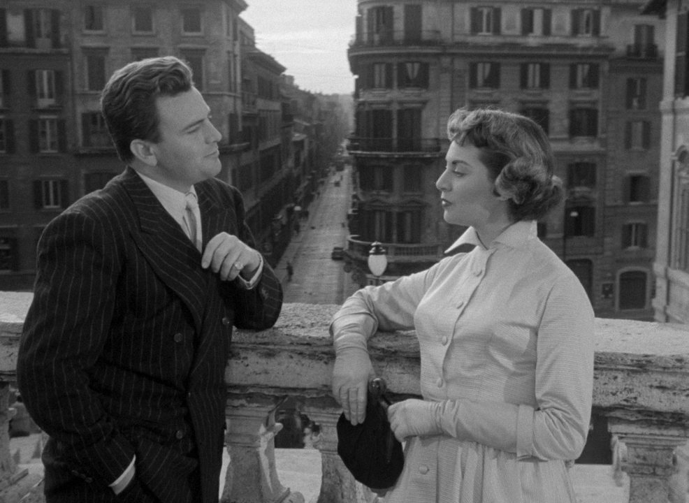
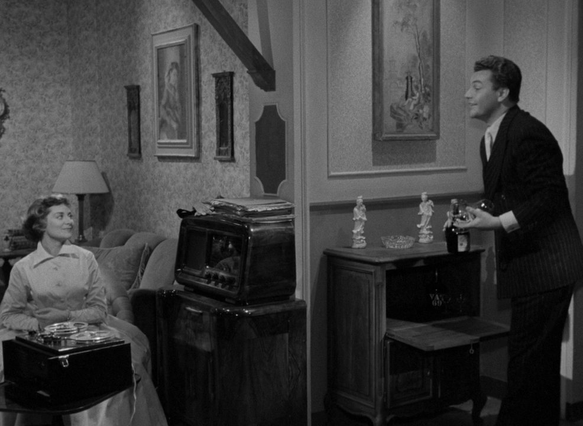
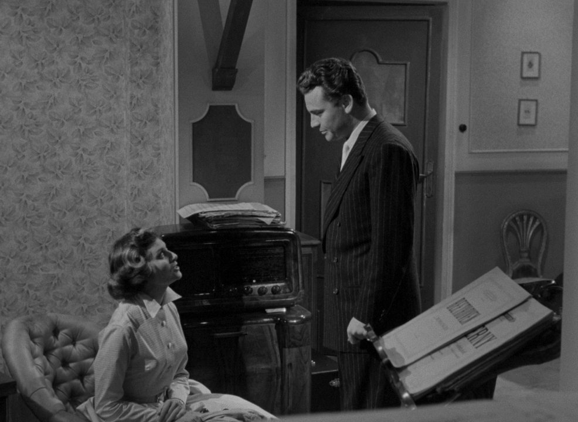
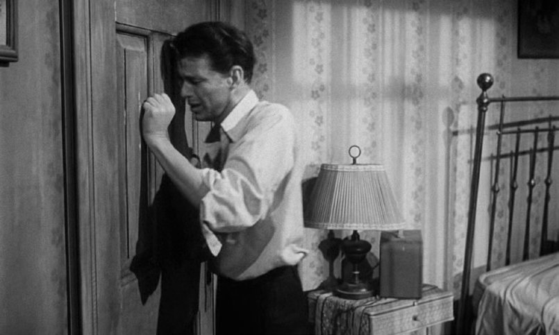
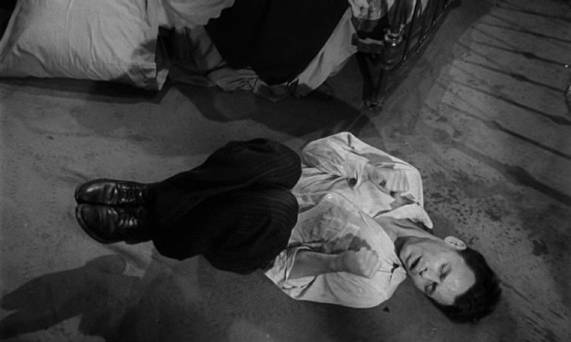
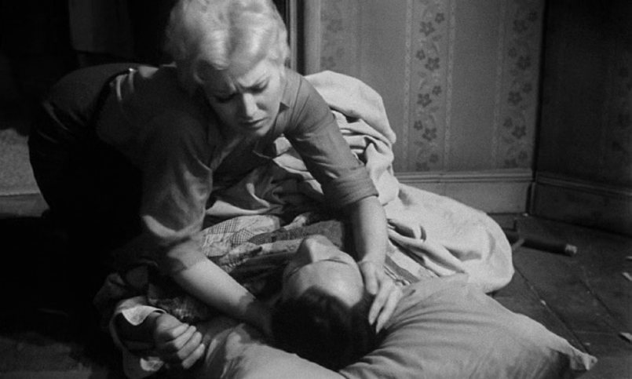

Issue #1 — To Utopia
Of Rhythm and Repetition
Or Addenda On Two Films
Form is whole. We begin here.
If much of the current critical environs doubled-down on an assorted manicheism of theoretical fixtures—ranging from postist structuralist jouissances to rigor mortised axiomatics—what unfolds before us is the need to pencil out the know-how of a cinema that suffuses with life and beauty through its every part. In We Still Bow To The Old Gods, Jean-Luc Jacques gives a brimming upsurging call on cinema’s intelligence as needing to aim towards transposing the subtle beauty of the natural world through its own apparatus. The following work is an accompaniment to that, cycling through a number of films where metteurs achieve the cosmogonical rhythm that endow said works with form-fitting harmony. This harmony is not a drunkard sunbathed swinging travel shot, grain peppered stroboscopic reelesque snaps, dialectical clouds, theory-maxxed disgorgings. It is not χάος. It is purposeful euphonia; the world is harmonious in it-selfness, cosmos is equally order, the adornment, the whole. The whole, forma and substantia, are already coupled. There is willed order through disorder.
Cottafavi is a purveyor of form as essential substance that achieves harmonisation. He recognized the transections between theatre and cinema, and overrode them. His is an enlived and in-lived scenography; the corporeality of Una donna libera’s settings breathes and settles life through motion. That motion is of the characters that manifest about in the geographical arrangements of a crafted rhythmicity. They don’t eclipse, nor overflow with melo decries. The world within is not prey to a solipsistic gaze, that of a director caught navel-gazing in pedantic discourses. It is not a narrow enclave that shifts about the whims of an actor. The camera enables the cadre-framed movements that make a world of crafted intelligence. Cottafavi said it: the camera works with its own intelligence. It scissors the unilateral gaze for the subtle beauty of the concrete manifest. Theater and its scene is an enclave, a formalistic structure, held inside the tableau of the proscenium. It devises, but does not generate. Cinema is synallagma—mutual and reciprocal. The glide of the camera, the skating of the actors—all inside the frame, the cut, the sound. The proscenium offers the snapshot—the moment that cinema, under a metteur’s selfless guidance, rotates, dilates, slices, and solders. That achievement is made possible through simplicity, the substantia-rich suchness that doesn’t overflow into decorative shallowness.



Rhythm is a form of its own too—the shape something takes in the instant of its movement. It is form caught in a passage. It flows in an ordering of duration. To perceive change is first to take pulse of the rhythm and its repetition. This repetition is what distributes Liana’s fate. A sameselfness that condemns and characterizes. She breaks her engagement, mingles with the woman-hopping maestro, has an intermezzo with a man decades her senior, to ultimately find herself back in his orbit. On paper it evokes the features of a pearl-clutching melodrama, but what we know or must adequately understand is that Cottafavi’s intelligence surprises by inversing such a reductive reading. Liana is not subjugated by the noonday demon of melo tropes and tearjerker crudity. She is her own throughout the outer and inner turmoils vacillating her life. It is life, in its fractal happenstances. She slides down the gullet of the world eager to pencil out and carve a space that does not immobilize. By her own self-reckoning, ab initio the clarity of the mirror reflection, we are regressively made to witness the repetitive string of decisions that got her here. Melodrama is a splintered discourse, where the highs and lows of narrative come from seemingly contradictory bouts of resounding character decisions. That is not the case with Liana—her character development is generative and every decision comes about the self she cuts out and polishes before and by the camera within the configured world of narrow verticalities the men in her life abound.



Una donna libera is a mesh of horizontals, diagonals, and verticals. Cottafavi’s camera never chases Liana, she glides across, meets her at an angle; she cuts through the horizontal and vertical of a wideshot, a singular will that moves through the implacable world—it is how the film begins, before flinging us through the service of the narrative flashback, and how it ends. A noncrescendoed dramatical final note; what the reflection pointed backwards to us, an entrance with no exit. Alea iacta est. Redundant point—Liana is an architect and designer. She designs and furnishes interiors for others, but cannot do as such with her own life. The vector of her presence is always against the orchestrating verticalities at play. The first time she is at Geraldo’s apartment, she notes how it suits, if not resembles him thoroughly. First shot, as the two enter, the grand piano is a waxing crescent that preordains their fate. The instrument of Geraldo’s craft, later mirrored in a similar fashion for Liana and her own profession.
Her and Geraldo gravitate around the arithmetic of verticals—his gaze boring down on her, hers an unveiling of his character. If it’s not that, it’s a jutting edge making up a diptych. Or a road junction in an otherwise plenary frame. Gestures of yearning plenitude—Liana encountering Geraldo, she cups the glass, embraces it in the promise of the fulfilled abundance at play; Geraldo rubs his, his exultation is self-relishment the open cadre that pours out together with the recording of his conducting, and telescopes the unmitigable to Liana.
The montage predefines a latter Cottafavi, a filmmaker, a metteur, of organic polished simplicity and necessity. One who conjures universals of vested affects. The world is denuded to the rhythmic pendulings of Liana’s ardor. She faces the vistas of a future, frigid to the narrowing promise of the soon-to-be marriage. So she breaks the engagement. She ambles about, a slicing profile that eludes one unilateral reading of the camera. When Cottafavi spoke of the film camera’s intelligence, he spoke of its ability to probe interiorities. To make possible the tether to the material affect that suffuses throughout the film. That is achieved by a self-severing, the intent to approach the interiority of the character. Said interiority is made possible by the necessary simplicity and breathability the camera, montage, metteur, and actors all forge together. It is a volatile intent, never be confused with spiritless faux-pas accidents. It is a spectre of the careful distribution of forms and linear compositions that make up the frame. The characters in Una donna libera spar with personal philosophy drivels that alienate more than connect. Most honest are the specks of reflective thoughtfulness and inner monologue Liana offers in her voice-over recountings.
When Liana shoots Geraldo what surprises isn’t the killing, so much as that we can see, and know, that this inversal, of the puerile and the dramatic, of which Geraldo, moments prior, mocks Liana with, was the only finality. It is a fugato, a crescendo that ends abruptly. The camera zooming and out in terminal retreat. Everything is now changed; silence holds the frame together. The technique recalls a previous scene between Liana and her husband, Massimo. It is the threshold step, from one existential geometry to another. There is nothing to gaze back upon.
We spoke of rhythm, a measure of duration and necessity that anticipates form and change. In Preminger’s The Man with the Golden Arm, the camera is a discrete peeping tom, the world of Frank Sinatra’s eponymous Frankie a closed-circuit folded back on itself. The in medias res shaped by long continuous pans, looped bars, staircases, bars, and vicious cycles. Simple, self-suffcient story.



For Preminger, a metteur that arrived at film through theater, story takes precedence; it is laboured on it. What the camera captures is the proper distribution of figurative gestures throughout space. The measure of motion and measure of rest. Frankie’s restlessness loops the fixed axis of his seemingly wheelchair-bound wife Zosh. His gesturality is not a flourish that overspills; within the nude plains that make up the short-distanced mundaneity of his new freedom-laden life, it is the outer ringing of inner revolt. Here is a character traipsing about his own sense of self again.
The loop that makes up the geometry of Frankie’s world, is also the one setting its rhythm. Frankie wants out—a novel repetition of gestures. Rhythm and repetition. The figure and figurative take centerstage here with bodily delivered pathos. When Frankie goes cold turkey, thunderous drumbeats, stupefiant shrills, and spasming limbs across the cuboid spareness of a room hold the frame. It is piercing in its scenic vacuity; parsed gestures in undecorative means. Pure necessity of form we are trained to. The distance is exorcised and we are there, transplanted, alongside the characters. The cadre is one of verticals that repress and shrink. The closed ring of unescapable stairwells, the wife, Zosh (upon the discovery that she feigned her disability and killed a man) evinces by defenestration. The world is inevitably changed once again, the past purged and rhythm withheld. Frigid? No. Crystal clear.
N.B.: These are annotations to two films viewed and re-viewed post-lecturing Park Row collective’s written works on film today, form, substance, and cinema as whole. It is an exercise in underscoring the teachings espoused by those works. There is nothing exhaustive here.